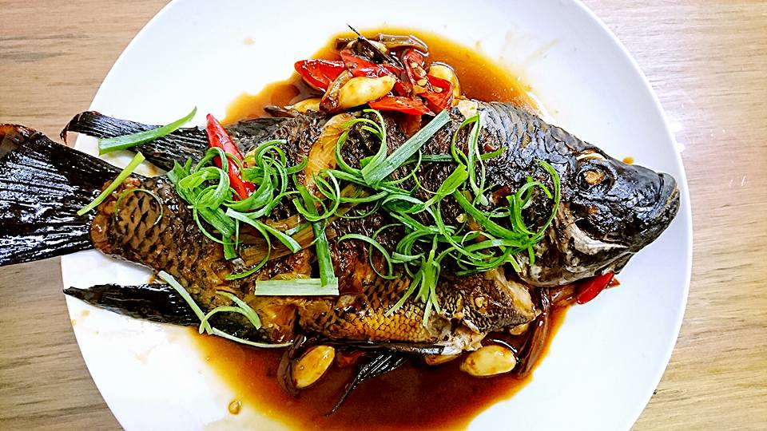
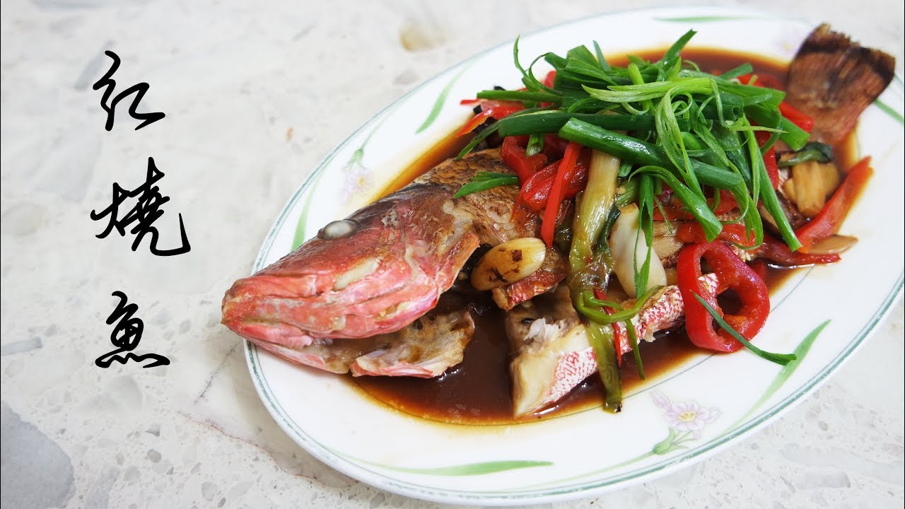
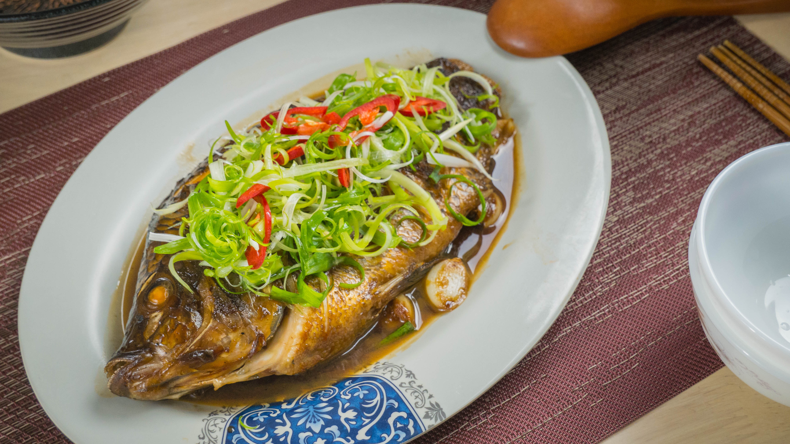

2. 將平底鍋燒熱，鍋子放油，魚下鍋油煎
3. 將魚肉兩面煎熟
4. 魚煎熟後加入調好的調味料一起煮，不喜歡太稠的話可以適量加一些水
5. 將魚肉煮到入味，起鍋前試看看味道會不會太重，如果太鹹可以加水
6. 美味紅燒魚上桌！
  
炒米粉介紹 牛肉麵介紹 苦瓜鹹蛋介紹 心得
練習 影片 音樂
Your browser does not support the audio element. Your browser does not support the video tag.